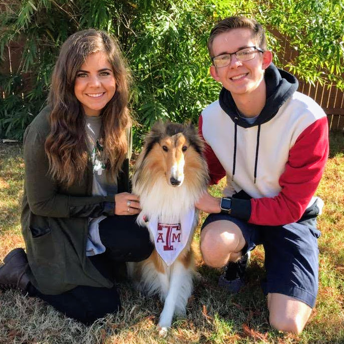

About Sawyer

Howdy!
My name is Sawyer Cowan. I am currently a rising senior at Texas A&M University in College Station, TX studying Computer Engineering with a minor in Mathematics!Welcome!
This is my first website created from HTML, CSS, and JavaScript. There's a few things to do on this page, so please feel free to look around.
